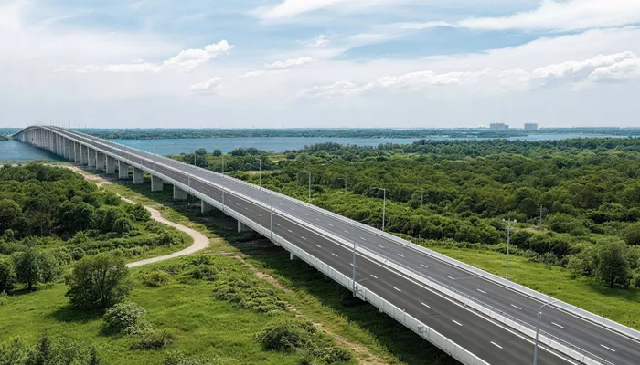
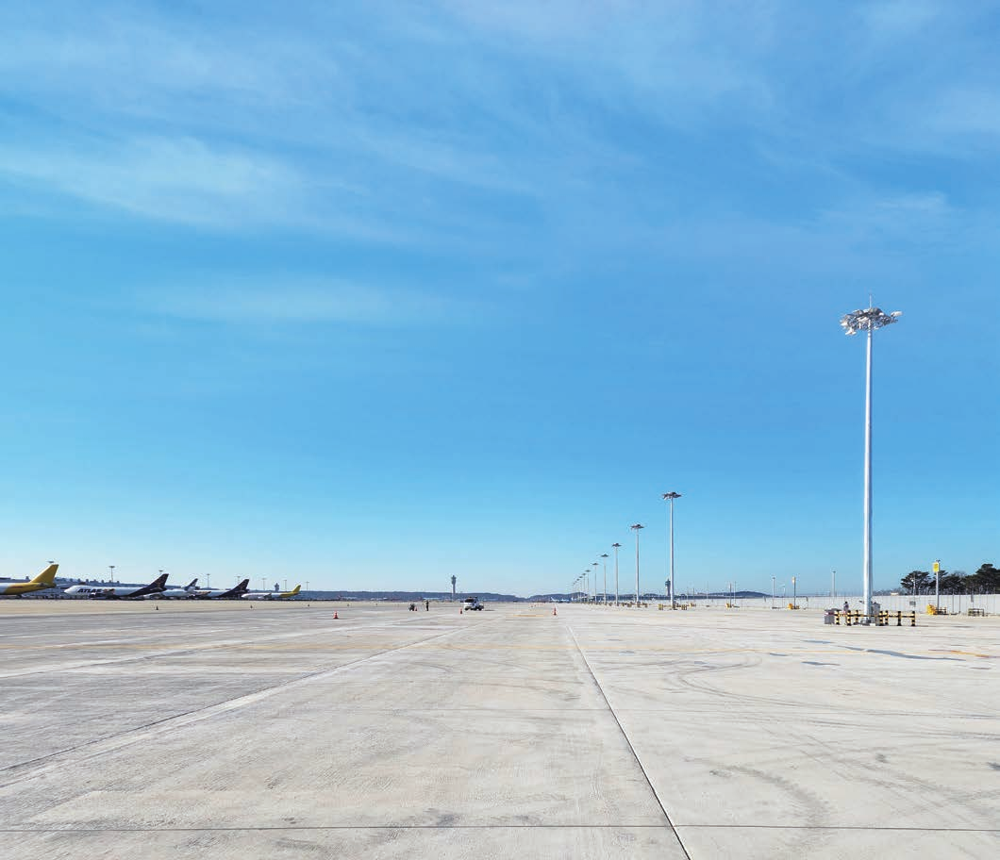
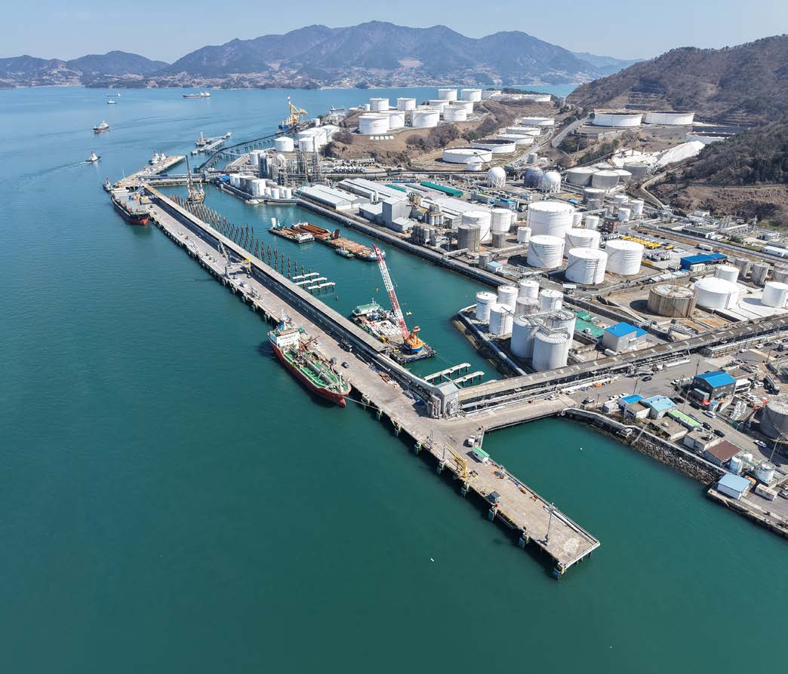
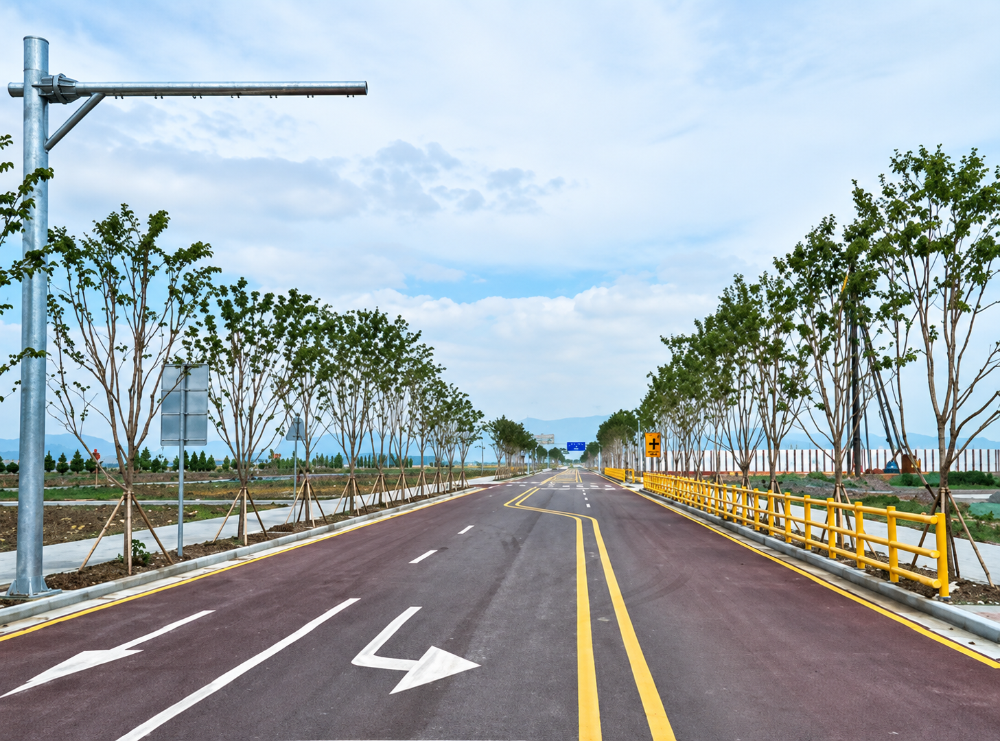

HOME > 사업분야 > 토목사업
토목사업 CIVIL ENGINEERING
CIVIL ENGINEERING
01 CIVIL ENGINEERING

-
CONNECTING THE LAND
도시와 국토를 잇는
공간예술 - 금호건설은 도로·철도·공항·항만 등 다양한 SOC 사업을 성공적으로 수행해왔습니다. 풍부한 경험과 기술력을 바탕으로 국토의 흐름을 연결하고 더 나은 도시의 기반을 만들어갑니다.
02 BUSINESS AREA
국토의 흐름을 만드는
기반시설을 구축합니다.
기반시설을 구축합니다.
도로와 철도, 공항과 항만, 택지와 기반시설까지. 축적된 시공 경험과 전문기술로 사람과 지역, 도시를 안전하게 연결합니다.
-
- 01ROAD & BRIDGE도로·교량
- 도시와 지역을 연결하는
핵심 교통망
-
- 02RAILWAY철도·지하철
- 빠르고 안전한 이동을 위한
철도 인프라
-
- 03AIRPORT & PORT공항·항만
- 사람과 물류를 이어주는
글로벌 거점
-
- 04SITE & INFRA택지·기반시설
- 도시 성장을 뒷받침하는
생활 기반
03 FEATURED PROJECTS
대표 프로젝트로 확인하는
금호건설의 토목 역량
금호건설의 토목 역량
공항과 항만, 대규모 도시기반시설까지. 국토의 가치를 확장해 온 금호건설의 대표 토목 프로젝트를 확인해보세요.
-

- AIRPORT인천국제공항 4단계 계류장
- 인천광역시 중구
-

- PORT광양항 낙포부두 개축
- 전라남도 여수시
-

- SITE DEVELOPMENT부산 에코델타시티 조성
- 부산광역시 강서구